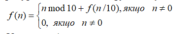

Ввести з клавіатури натуральне число n. Знайти суму його цифр, використовуючи рекурентне означення функції f(n):
Умова продовження рекурсії: сума цифр числа дорівнює останній цифрі плюс сума цифр числа без останньої цифри (числа, що ділиться без остачі на 10). Умова закінчення рекурсії: якщо число дорівнює 0, то сума його цифр дорівнює 0.
Вкладник поклав в банк sum грошових одиниць під pr відсотків за один період. Усі дані вводити з клавіатури. Використовуючи рекурсію, визначити величину вкладу по звершенні m періодів часу. Контрольний тест: введені дані: сума вкладу 1000, відсотки за період 1.25, кількість періодів 12, отриманий результат: 1160.75